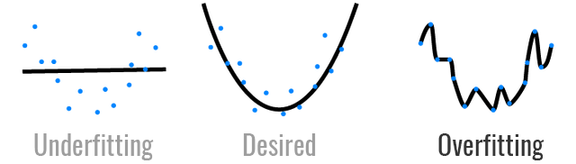

class: center, middle # Intro to ML <h3 style="color: darkblue">Tae Geun Kim</h3> --- ## Table of Contents -- * Curve Fitting -- * Probability Theory -- * Bayesian Probability -- * Gaussian Distribution --- class: center, middle # Curve Fitting --- **R Example** <img src=curve_fit.png style="width:100%"> --- ** MATLAB Example** --- ### Curve Fitting * For given data : `\(\mathbf{x} = (x_1,\cdots, x_N),~\mathbf{t} = (t_1, \cdots, t_N)^T\)` -- * Form polynomial : `\(\displaystyle y(x, \mathbf{w}) = w_0 + w_1 x + \cdots + w_M x^M = \sum_{j=0}^M w_j x^j\)` -- * Given error function : `\(\displaystyle E(\mathbf{w}) = \frac{1}{2} \sum_{n=1}^N\{y(x_n,\mathbf{w}) - t_n\}^2\)` -- * Choose `\(\mathbf{w}\)` which minimizes error function - `\(\mathbf{w^\star}\)` -- Finish -- ..? -- <br/> Q. How to determine order `\(M\)`? --- ### Curve Fitting  * Too low `\(\rightarrow\)` Underfit! -- * Too high `\(\rightarrow\)` Overfit! -- * To measure this, we use **root-mean-square error** -- $$ E\_{RMS} = \sqrt{\frac{2E(\mathbf{w^\star})}{N}} $$ --- ### Curce Fitting For over-fitting model, we can get -- * Low `\(E_{RMS}\)` for training set, -- * High `\(E_{RMS}\)` for test set. -- `\(\Rightarrow\)` Biased to trainset! -- Then how to control it? -- 1. Just many data sets! (Cross Validation) -- 2. Regularization -- We will discuss it later (Chapter 5) --- class: center, middle # Probability Theory --- ### Probability Theory - Review Brief Review -- * Joint probability : `\(p(X=x_i,\,Y=y_j)\)` -- * Marginal probability : `\(\displaystyle p(X=x_i) = \sum_{j=1}^L p(X=x_i,\, Y=y_j)\)` -- * Conditional probability : `\(\displaystyle p(Y=y_j\,|\,X=x_i)\)` -- * Product rule : `\(\displaystyle p(X=x_i,\,Y=y_j) = p(Y=y_j\,|\,X=x_i)p(X=x_i)\)` -- Two rules & One theorem for probability -- * Sum rule : `\(\displaystyle p(X) = \sum_{Y}p(X,Y)\)` -- * Product rule : `\(p(X,Y) = p(Y|X)p(X)\)` -- * Bayes' Theorem : $$\displaystyle p(Y|X) = \frac{p(X|Y)p(Y)}{\sum\_Y p(X|Y)p(Y)}, ~~ p(Y):\,\text{prior prob},~p(Y|X):\,\text{posterior prob}$$ --- ### Continuous Random Variable **Probability Density Function (PDF)** -- * Positive definite : `\(p(x) \geq 0 ~ \forall x \in \mathbb{R}\)` -- * Total is 1 : `\(\displaystyle \int_{-\infty}^{\infty} p(x) dx = 1\)` -- Then we describe probability as follow : $$p(x \in (a,b)) = \int\_a^b p(x) dx $$ -- * Cumulative Distribution Function (CDF) $$ P(z) = \int\_{-\infty}^z p(x) dx $$ $$ P'(x) = p(x)$$ --- ### Continuous Random Variable - Advanced Q. How to define probability? -- * In Highschool : `\(\displaystyle p(A) = \frac{n(A)}{n(\Omega)}\)` -- Ex) Find the probability of an arrow hitting in a circle when the circle target is in contact with all four sides in a square target. (Arrow never leaves the square target.) -- Obviously, it is `\(\frac{\pi}{4}\)`. But it's not compatible with our definition. So, we fix our definition. -- $$p(A) = \frac{\text{size of }A}{\text{size of }\Omega} $$ -- How to define **size of set**? -- **Measure Theory - Lebesgue Integration** --- ### Momentum -- * `\(n\)`th order momentum of random variable : `\( \mathbb{E}[x^n] \)` -- There are some famous momenta : -- * Mean (Expectation Value) $$ \mathbb{E}[f] = \int p(x) f(x) dx $$ $$\mathbb{E}\_x[f(x,y)]$$ $$\mathbb{E}\_{x}[f|y] = \sum_x p(x|y) f(x) $$ -- * Variance : $$ var[f] = \mathbb{E}\left[(f(x) - \mathbb{E}[f(x)])^2 \right] $$ $$ var[x] = \mathbb{E}[x^2] - \mathbb{E}[x]^2 $$ --- ### Momentum * Covariance $$ cov[x,y] = \mathbb{E}\_{x,y}[(x - \mathbb{E}[x])(y - \mathbb{E}[y])] $$ $$ cov[\mathbf{x}, \mathbf{y}] = \mathbb{E}\_{\mathbf{x},\mathbf{y}}[\mathbf{xy}^T] - \mathbb{E}[\mathbf{x}]\mathbb{E}[\mathbf{y}^T]$$ -- <br/> **Caution**: Usually, vector means column vector. --- class: center, middle # Bayesian Probability --- ### Frequentist vs Bayesian -- * Frequentist Interpretion : In terms of the frequencies of random, repeatable events. -- * Bayesian Interpretion : Interprete probability with the axiom from measure theory -- Example - Likelihood $$ p(\mathbf{w}|\mathcal{D}) = \frac{p(\mathcal{D}|\mathbf{w})p(\mathbf{w})}{p(\mathcal{D})}$$ -- * `\(p(\mathbf{w})\)` : Prior probability -- * `\(p(\mathbf{w} | \mathcal{D})\)` : Posterior probability -- * `\(p(\mathcal{D} | \mathbf{w})\)` : Likelihood -- * Frequentist : Fix `\(\mathbf{w}\)`, consider distribution of `\(\mathcal{D}\)` - Maximum Likelihood Estimation -- * Bayesian : Only one `\(\mathcal{D}\)`, uncertainty in the parameter is in PDF of `\(\mathbf{w}\)` -- We will discuss it later. --- class: center, middle # Gaussian Distribution --- ### Gaussian Distribution $$\mathcal{N}(x|\mu,\sigma^2) = \frac{1}{(2\pi\sigma^2)^{1/2}} \exp{\left[-\frac{1}{2\sigma^2}(x-\mu)^2 \right]}$$ -- * `\(\mu\)` : mean -- * `\(\sigma\)` : Standard deviation -- * `\(\beta = \frac{1}{\sigma^2}\)` : Precision -- We can check next properties: -- $$\mathbb{E}[x] = \int_{-\infty}^{\infty} \mathcal{N}(x|\mu,\sigma^2)x dx = \mu$$ $$\mathbb{E}[x^2] = \int_{-\infty}^{\infty} \mathcal{N}(x|\mu,\sigma^2)x^2 dx = \mu^2 + \sigma^2 $$ --- ### Gaussian Distribution We can write higher order Gaussian distribution as follow: $$ \mathcal{N}(\mathbf{x}|\mathbf{\mu},\mathbf{\Sigma}) = \frac{1}{(2\pi)^{D/2}|\mathbf{\Sigma}|^{1/2}} \exp{\left[-\frac{1}{2}(\mathbf{x} - \mathbf{\mu})^T \mathbf{\Sigma}^{-1}(\mathbf{x} - \mathbf{\mu}) \right]}$$ -- * `\(\mathbf{\mu}\)` : mean -- * `\(\mathbf{\Sigma}\)` : Covariance of `\(\mathbf{x}\)` -- * `\(|\mathbf{\Sigma}|\)` : Determinant of `\(\Sigma\)` --- ### Gaussian Distribution - Probability Q. If there are many random variables from same Gaussian distribution, then how..? -- **Independent Identically Distributed (i.i.d)** : Each random variable has the same probability distribution as the others and all are mutually independent. -- So, we can write **likelihood** of i.i.d random variables from Gaussian distribution as follow: $$ p(\mathbf{x} | \mu, \sigma^2) = \prod\_{n=1}^N \mathcal{N}(x\_n|\mu,\sigma^2)$$ --- ### Gaussian Distribution - Probability For technical reason, we prefer log likelihood. $$ \ln p(\mathbf{x}|\mu,\sigma^2) = - \frac{1}{2\sigma^2}\sum\_{i=1}^N (x\_n - \mu)^2 - \frac{N}{2} \ln \sigma^2 - \frac{N}{2} \ln(2\pi)$$